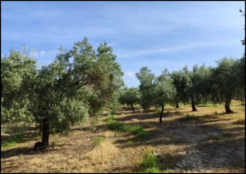
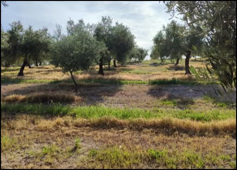
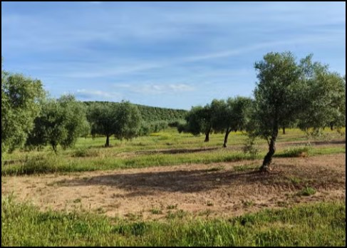
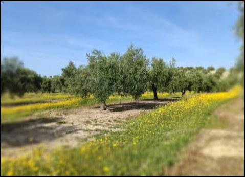
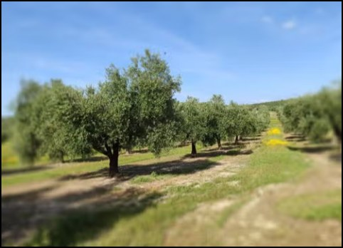
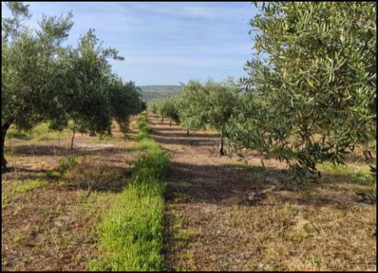

Fotografías de la finca







Descripción
Finca de olivar situada en Baena, Córdoba, con 22,6 hectáreas y 37 fanegas. La explotación dispone de olivos a un pie de varias castas y es totalmente mecanizable. Se encuentra a muy poca distancia del núcleo urbano y tiene acceso a pie de carretera. El anuncio facilitado indica además subvención y pozo para tratamientos.
Hablar con COOINMO